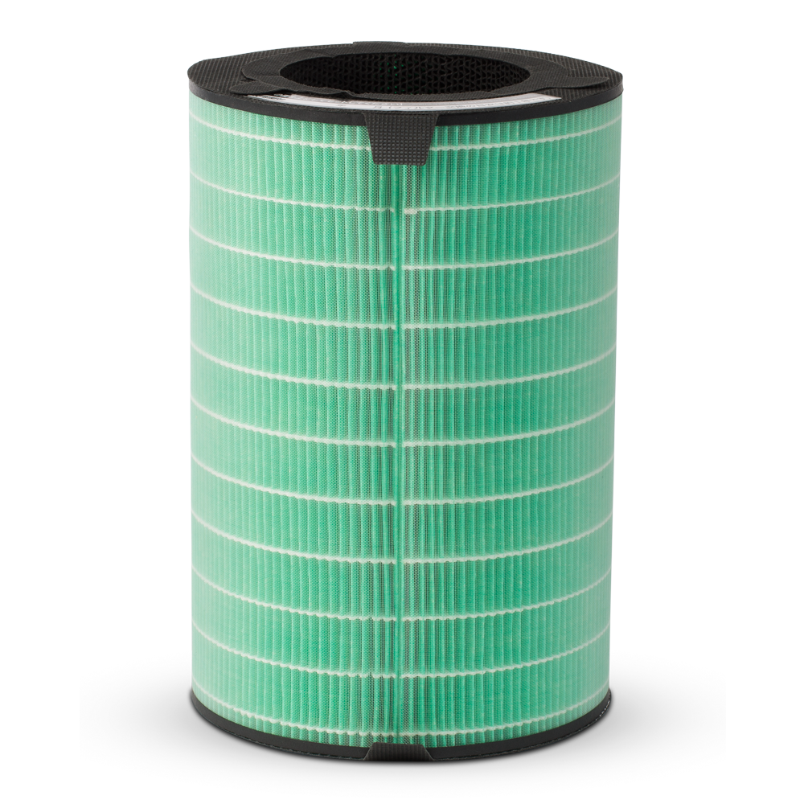
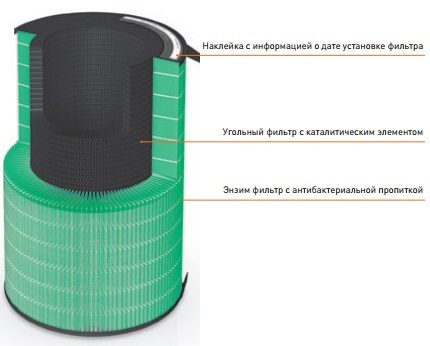
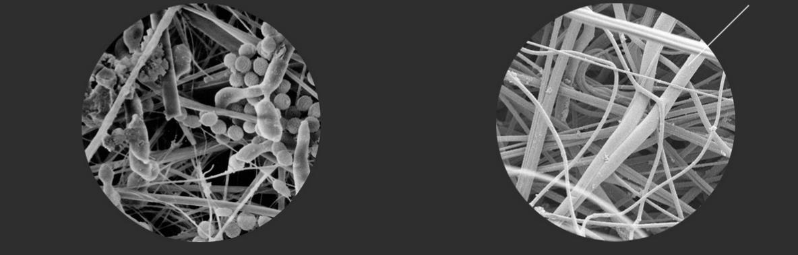

Набор фильтров A8F2
Система GREEN 360° для воздухоочистителя A803 AirEngine
Энзим фильтр с антибактериальной пропиткой осуществляет предварительную очистку воздуха, поглощает пыль, плесень, шерсть, уничтожает микробы размером до 0,1 микрона.
Угольный фильтр с каталитическим элементом уничтожает сложные (формальдегид, различные аммониевые соединения, гидроген сульфид) полулетучие органические соединения, включая вредные газы, резкие запахи.
Типовой фильтр НЕРА
Во время эксплуатации на его поверхности и внутри будут развиваться микроорганизмы, загрязняя воздух.
Фильтр Green 360
Фильтр обладает специальной литической пропиткой, разрушающей органику.
Эффективное очищение
Запатентованная система GREEN 360° состоит из энзим-фильтра с антибактериальной пропиткой и угольного фильтра с каталитическим элементом. Она предназначена для эффективного задерживания мельчайших частиц и нейтрализации различных запахов в воздухоочистителе A803 AirEngine в течение 12 месяцев.